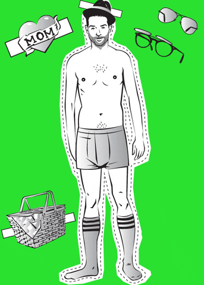

1 Setting up Our plot
Data4All
1.1 Motivation: Exploratory versus Explanatory
Exploratory analysis:
- exploring and understanding the data, conducting the analysis
Explanatory analysis:
- explaining your findings from your analysis in a coherent narrative that leads to a call to action
1.2 Effective Visual Communication
Focus on three techniques:
- Decluttering your plot
- Annotating your graph and data
- Highlight data using Preattentive Attributes
1.3 Paper Doll Approach
- We’re going to take a basic plot and dress it up
- Modify its appearance to make our point more understandable and immediate
1.4 Dressing Up a Base Plot
We’ll start with a base plot that we’ll dress up. Here’s what that looks like.
Let’s save our plot into an R object called a ggplot. We’ll use the <- (left arrow) to assign it to the variable called my_plot:
We need a few packages for Python. We need the pandas, seaborn, and matplotlib packages.
We will start by making a plot object with sns.lineplot():
1.5 Dressing up my_plot
Now, when we want to modify our plot, we can use my_plot. More on this in the next notebook. We’re basically going to add commands to modify our plot. I like to think of it as a paper doll approach: we are dressing our plot in different clothes.